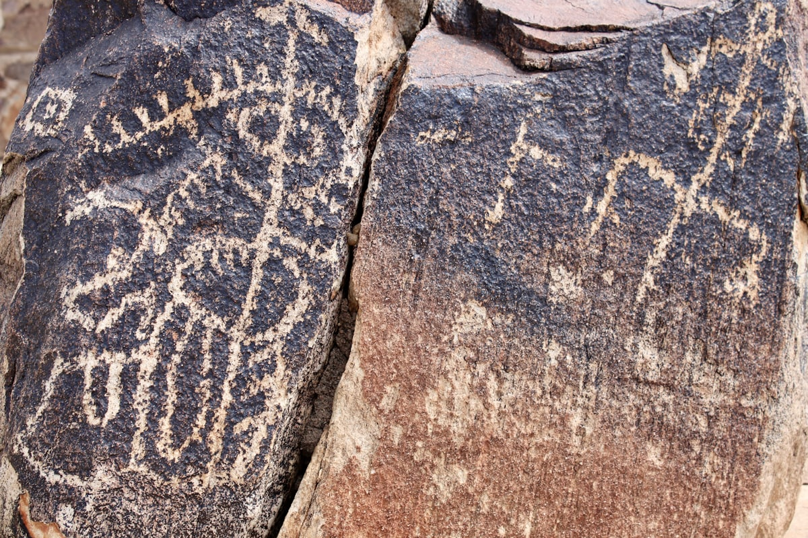
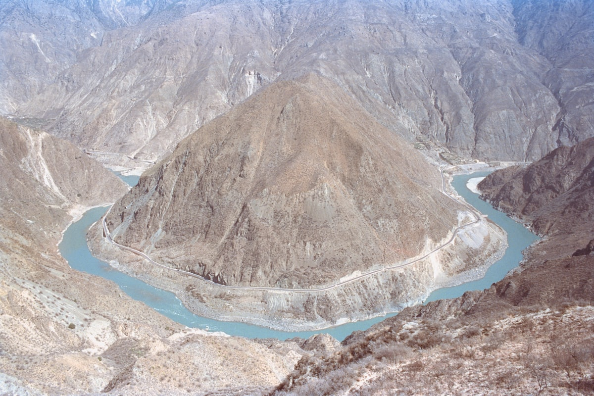
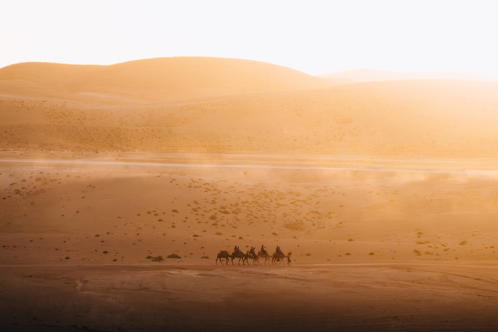
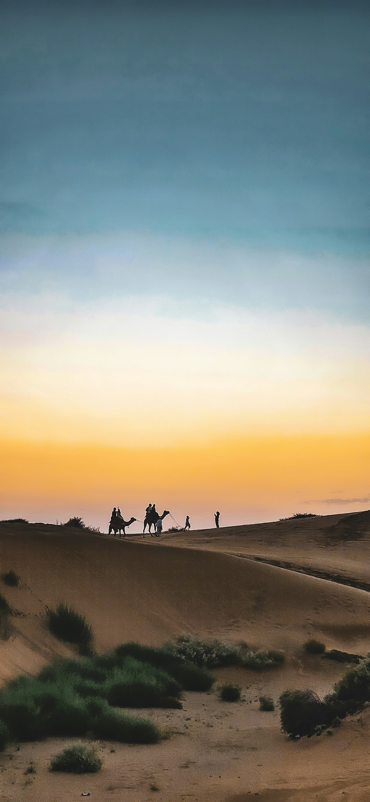
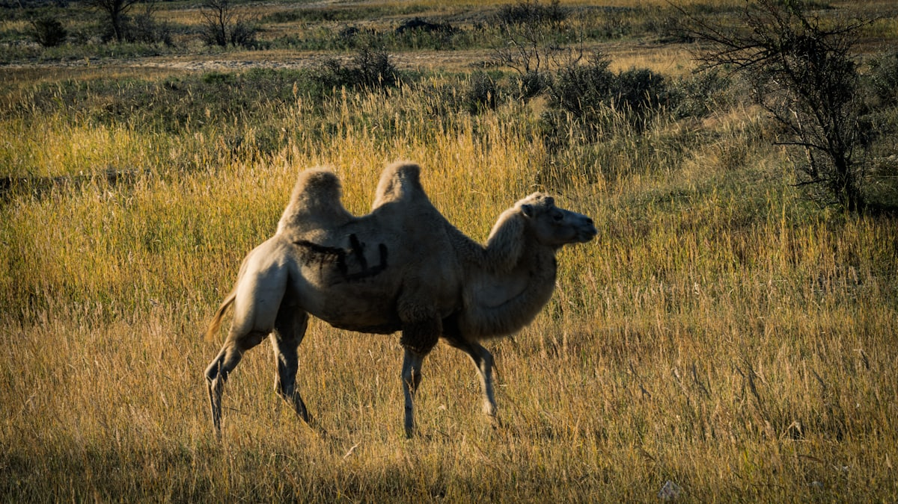

1核心结论
银川
→
西夏王陵
→
贺兰山
→
沙坡头
→
中卫
→
腾格里沙漠
→
返程
🕐 10 天怎么安排最合理
宁夏是全国最小的省份之一，景点却跨沙漠、黄河、贺兰山、六盘山四种地貌。10 天足够把「银川都市圈 + 中卫沙坡头 + 固原六盘山」一次走完：前 4 天银川看西夏王陵、沙湖、贺兰山岩画，中间 3 天南下中卫玩转沙坡头与腾格里沙漠，最后 2 天去固原看六盘山和须弥山石窟，收尾回银川。高铁串联，城市间 1–2 小时。
| 事项 | 结论 |
|---|---|
| 事项 | 结论 |
| 推荐方案 | 10 天 9 晚：银川（4 晚）+ 中卫（3 晚）+ 固原（1 晚）+ 银川（1 晚） |
| 返程约束 | 第 10 天从银川返程 |
| 行程链 | 银川 → 沙湖 → 西夏王陵 → 中卫沙坡头 → 固原 → 银川 |
| 预算（人均） | 经济 4000–5500 ／ 标准 6000–8500 ／ 舒适 10000–14000 |
| 三件提前事 | ① 沙坡头旺季项目票提前订 ② 沙漠露营提前约帐篷 ③ 西夏王陵查好讲解场次 |
| 季节提醒 | 5–10 月最佳；7–8 月晒但沙漠体验最好；冬春多风沙 |
| 交通卡 | 银川↔中卫高铁约 1.5h，银川↔固原约 3h |
⚠️ 两个容易忽略的点
① 沙坡头是『玩项目』的景区，黄河飞索、滑沙、羊皮筏子、沙漠越野都是另收费项目，单买门票只看沙漠会亏一半体验，建议提前 1–3 天订套票。② 宁夏虽小但景点分散，银川—中卫—固原三点之间都靠高铁/长途车，去贺兰山岩画、水洞沟这类景点需包车，别把行程排太满。
2推荐行程 · 10 天版
以下为 10 天 9 晚的推荐节奏：银川 3 天主城，第 4 天南下去中卫，第 5–7 天沙坡头+腾格里深度玩沙，第 8 天转固原，第 9 天回银川收尾。
| 日期 | 行程 | 过夜地 | 主题 |
|---|---|---|---|
| D1 抵银川 | 入住市中心，傍晚怀远夜市 | 银川 | 抵达 + 预热 |
| D2 | 西夏王陵 + 镇北堡西部影城 | 银川 | 西夏 + 影城 |
| D3 | 沙湖（半天）+ 贺兰山岩画 | 银川 | 沙水贺兰 |
| D4 | 水洞沟 + 银川鼓楼/玉皇阁 | 银川 | 史前遗迹 |
| D5 | 高铁赴中卫，下午黄河宫 + 高庙 | 中卫 | 黄河之城 |
| D6 | 沙坡头一日：滑沙 + 飞索 + 羊皮筏子 | 中卫/沙漠营地 | 沙漠狂欢 |
| D7 | 腾格里沙漠：越野冲沙 + 露营星空 | 沙漠营地 | 大漠星空 |
| D8 | 中卫 → 固原：六盘山红军长征景区 | 固原 | 红色六盘 |
| D9 | 须弥山石窟 → 返回银川 | 银川 | 丝路石窟 |
| D10 返程 | 上午自由活动/采购，下午返程 | — | 收尾 |
🧭 路线可调原则
带小孩的家庭把 D6 的沙漠项目控制在半天，留时间玩水；固原段（D8–D9）喜欢人文的可换成吴忠+青铜峡一百零八塔。沙坡头与腾格里都去的话至少留 2 天，只去沙坡头 1 天也够。
3逐小时时间线
以下为 10 天全程的逐小时执行时间线，可当作「当天打开照着走」的清单。标注 ※ 的可选项视体力与天气取舍。
D1 · 抵达银川
入住市中心
🚇 抵达日
| 时间 | 事项 |
|---|---|
| 14:00–17:00 | 抵达银川（高铁到银川站，飞机到河东机场，机场大巴进城） |
| 17:30–18:30 | 办理入住（推荐鼓楼/金凤万达一带） |
| 19:00–21:00 | 怀远夜市：辣糊糊、烤蛋、宫廷牛肉饼，银川最火夜市 |
| 21:00 | 回酒店休息 |
怀远夜市在宁夏大学旁，本地学生也爱去，价格实在。银川海拔 1100 米，基本无高反压力。
D2 · 西夏王陵 + 镇北堡影城
西夏 + 影城一日
🏯 西夏日
| 时间 | 事项 |
|---|---|
| 08:30 | 包车出发（西夏王陵距市区约 35km，40 分钟） |
| 09:30–12:30 | 西夏王陵（参考价 75 元）：『东方金字塔』、西夏博物馆 |
| 12:30–13:30 | 午餐：镇北堡周边 |
| 14:00–17:30 | 镇北堡西部影城（参考价 80 元）：《大话西游》《红高粱》取景地 |
| 18:30 | 晚餐：银川市区，尝手抓羊肉 |
镇北堡是『中国电影从这里走向世界』的地方，紫霞仙子表白城墙就在此。下午光线适合影城拍照。
D3 · 沙湖 + 贺兰山岩画
沙水贺兰一日
🏜 沙湖日
| 时间 | 事项 |
|---|---|
| 08:30 | 出发赴沙湖（银川北约 56km，1h 车程） |
| 09:30–13:00 | 沙湖（参考价 70 元+游船）：沙漠与湖泊并存，观鸟+沙雕 |
| 13:00–14:00 | 午餐：沙湖景区 |
| 15:00–17:30 | 贺兰山岩画（参考价 70 元）：远古岩画、贺兰口遗址 |
| 18:30 | 返回银川，晚餐 |
沙湖夏季芦苇荡与候鸟最多；贺兰山岩画区的太阳神像岩画是镇馆之宝。两地相距约 1 小时车程，一天可连走。
D4 · 水洞沟 + 银川市区
史前遗迹一日
🏺 遗址日
| 时间 | 事项 |
|---|---|
| 08:30 | 出发赴水洞沟（银川东约 30km，40 分钟） |
| 09:30–13:00 | 水洞沟（参考价 60 元）：三万年史前遗址、明长城藏兵洞 |
| 13:30–14:30 | 午餐：返回市区 |
| 15:00–17:00 | 银川鼓楼 + 玉皇阁（免费）：老城地标 |
| 17:30–19:00 | 宁夏博物馆（免费需预约）：贺兰山岩画与西夏文物 |
水洞沟是中国最早发掘的旧石器时代遗址之一，景区内的明长城+藏兵洞组合很有特色。博物馆周一闭馆。
D5 · 抵中卫
黄河之城
🚄 转场日
| 时间 | 事项 |
|---|---|
| 08:30–10:00 | 高铁银川→中卫（约 1.5h） |
| 10:30–12:00 | 入住酒店，放下行李 |
| 12:00–13:00 | 午餐：中卫市区，尝蒿子面 |
| 13:30–16:00 | 中卫高庙（参考价 30 元）+ 黄河宫（免费） |
| 17:00–19:00 | 黄河边看日落，沙坡头黄河索桥 |
| 20:00 | 晚餐：中卫夜市 |
中卫市区小，高庙的『空中楼阁』建筑很有特点；黄河宫以黄河文化为主题，馆前广场看黄河开阔。
D6 · 沙坡头
沙漠狂欢一日
🏜 沙坡头日
| 时间 | 事项 |
|---|---|
| 08:30 | 赴沙坡头景区（中卫市区西南约 20km，30 分钟） |
| 09:00–12:00 | 沙坡头（参考价 100 元+区间车）：王维『大漠孤烟直』实景地，滑沙 + 黄河飞索 |
| 12:00–13:00 | 午餐：景区内 |
| 13:30–17:00 | 羊皮筏子渡黄河 + 沙漠越野/骑骆驼 |
| 18:00 | 夜宿中卫或沙漠营地 |
沙坡头套票含基础项目约 200–300 元，飞索、滑沙、皮筏都值得；旺季项目排队，早到早玩。沙漠营地条件一般但星空无敌。
D7 · 腾格里沙漠
大漠星空一日
✨ 沙漠日
| 时间 | 事项 |
|---|---|
| 09:00 | 从营地/市区出发进腾格里沙漠（中卫西侧） |
| 10:00–13:00 | 沙漠越野冲沙 + 滑沙：高沙丘纵享刺激 |
| 13:00–14:00 | 午餐：沙漠营地简餐 |
| 15:00–18:00 | 沙漠徒步/骑骆驼 + 沙漠湖泊探访（天鹅湖） |
| 19:30 | 篝火晚会 + 沙漠烧烤 |
| 22:00 | 沙漠星空银河（晴夜） |
腾格里沙漠腹地手机无信号，跟随营地向导行动；星空季（4–10 月）银河肉眼可见，秋季最通透。
D8 · 固原六盘山
红色六盘一日
⭐ 六盘山日
| 时间 | 事项 |
|---|---|
| 08:00 | 中卫出发（高铁/包车至固原约 2.5h） |
| 11:00–14:00 | 六盘山红军长征景区（参考价 50 元）：长征纪念亭、云海 |
| 14:00–15:00 | 午餐：固原市区 |
| 15:30–17:30 | 固原博物馆（免费）：丝路文物、须弥山佛造像 |
| 19:00 | 夜宿固原 |
『六盘山上高峰，红旗漫卷西风』即指此处。夏季六盘山是避暑胜地，海拔约 2900 米。
D9 · 须弥山石窟 + 回银川
丝路石窟一日
🗿 石窟日
| 时间 | 事项 |
|---|---|
| 08:00 | 出发赴须弥山（固原北约 50km，1h 车程） |
| 09:00–12:00 | 须弥山石窟（参考价 45 元）：始凿于北魏，大佛楼第 5 窟 |
| 12:30–13:30 | 午餐：固原市区 |
| 14:00–17:00 | 高铁返回银川（约 3h） |
| 18:30 | 晚餐：银川，逛鼓楼夜市 |
须弥山与莫高窟同属丝路石窟体系，宁夏的『敦煌』，游客远少于敦煌、体验安静。
D10 · 返程
采购伴手礼 + 回家
🚄 返程日
| 时间 | 事项 |
|---|---|
| 08:30–11:30 | 自由活动：买宁夏枸杞、滩羊手抓真空装、贺兰砚 |
| 11:30–12:30 | 午餐 |
| 13:00–16:00 | 退房，赴银川站/河东机场，返程 |
| 16:30 | 抵达出发地，结束宁夏 10 天行程；枸杞等伴手礼注意防潮 |
伴手礼推荐：宁夏枸杞（中宁枸杞）、盐池滩羊肉、八宝茶、贺兰石砚。
4景点图鉴
必去（必去）/ 顺路（顺路）/ 可跳过（可跳过）。
必去
沙坡头 参考价 100 元
大漠黄河交汇奇观。滑沙 + 黄河飞索 + 羊皮筏子，王维诗意现场。
 必去
必去西夏王陵 参考价 75 元
『东方金字塔』。9 座帝陵 + 西夏博物馆，贺兰山下苍茫。

必去沙湖 参考价 70 元
沙漠与湖泊共存。芦苇荡 + 游船 + 沙雕，塞上江南名片。

必去镇北堡西部影城 参考价 80 元
《大话西游》取景地。黄土城堡 + 电影布景，紫霞仙子城墙。

顺路贺兰山岩画 参考价 70 元
千年远古石刻。太阳神岩画 + 贺兰口，史前艺术长廊。
 顺路
顺路水洞沟 参考价 60 元
三万年史前遗址。旧石器遗址 + 明长城藏兵洞，穿越时光。

顺路腾格里沙漠 营地项目自理
中国第四大沙漠。越野冲沙 + 露营星空，腹地银河肉眼可见。

可跳过须弥山石窟 参考价 45 元
丝路北道石窟。北魏始凿 + 大佛楼，游客少的『小敦煌』。
图片为 Unsplash 主题图（沙坡头、西夏王陵、沙漠星空等多为宁夏或同主题实景），用于页面配图。更多免费景点：银川鼓楼、黄河宫、宁夏博物馆、固原博物馆。
5路线地图
点击左侧节点可在地图上定位；点击地图 marker 会高亮对应节点。坐标为 WGS-84 转 GCJ-02 纠偏后标注。
6预算明细（三档）
以下为单人、不含购物的估算；门票为旺季参考价，以现场为准。往返交通按高铁计（从华北/西北出发约 800–1500 元），沙坡头与腾格里的沙漠项目是大头消费。
| 项目 | 经济（4000–5500） | 标准（6000–8500） | 舒适（10000–14000） |
|---|---|---|---|
| 往返交通 | 高铁约 800–1200 | 高铁/飞机约 1500–2200 | 飞机+接送约 3000–3800 |
| 住宿（9 晚） | 青旅/快捷 800–1200 | 连锁酒店 1800–2600 | 沙漠营地+星级 4500–6000 |
| 门票 | 基础景点约 450 | 含沙坡头套票约 800 | 全含+沙漠项目约 1300 |
| 餐饮（10 天） | 700–900 | 1300–1700（含手抓羊） | 2200–2800 |
| 省内交通 | 高铁+大巴 300–500 | 包车拼车 800–1200 | 包车 1800–2500 |
💰 标准档示例账单（人均约 8000 元）
往返交通 1800 + 住宿 9 晚 2200（双人分 4400）+ 门票 800 + 餐饮 1500 + 省内交通 1000 ≈ 7300 元。沙漠露营与项目票是弹性项，提前订套票能省 200–400 元。
7备选方案
7.1 只看精华的 5 天版
- D1 抵银川+怀远夜市
- D2 西夏王陵+镇北堡
- D3 沙湖+贺兰山岩画
- D4 沙坡头
- D5 返程
7.2 亲子版调整
沙坡头滑沙、骑骆驼、皮筏都是孩子最爱；减少沙漠越野与徒步，增加沙湖游船和宁夏科技馆，银川→沙坡头往返高铁当天来回也方便。
7.3 秋季摄影版
9–10 月沙漠温度适宜、光线通透，贺兰山岩画与西夏王陵的日出日落最出片；胡杨林季（10 月中）可加一天去额济纳（需多预留 2 天车程）。
8交通与住宿
8.1 宁夏 ⇄ 各地 交通
| 方式 | 时长 | 参考价 | 备注 |
|---|---|---|---|
| 高铁（推荐） | 视出发地 2–8h | 二等座 150–800 元 | 银川站通达西北与华北，银西高铁通西安 |
| 飞机 | 视出发地 2–4h | 400–1500 元 | 银川河东机场，多条航线 |
| 自驾 | 视出发地 | 高速+油费 | 省内公路好走，银川市区停车方便 |
⚠️ 省内交通核心提醒
宁夏景点分散但城市间高铁方便：银川↔中卫 1.5h、银川↔固原 3h；去沙湖、贺兰山、水洞沟、须弥山等景区需包车或班车，建议 2–4 人拼车更划算。沙漠越野项目要选有资质的营地。
8.2 省内交通
- 高铁：银川↔中卫约 1.5h、银川↔固原约 3h，二等座 60–150 元
- 包车：银川周边一日游约 300–500 元/车，去沙湖+岩画等组合最划算
- 公交/BRT：银川市内 BRT 2 元，覆盖主要商圈
- 机场大巴：河东机场→市区约 1h，20 元
- 沙漠营地接送：多数营地含中卫市区接送
8.3 住宿区域推荐
| 区域 | 价格/晚 | 优点 | 短板 |
|---|---|---|---|
| 银川鼓楼/金凤 | 快捷 250–400 / 星级 500–1000 | 市中心、近怀远夜市 | 旺季抢手 |
| 中卫市区 | 快捷 200–350 | 去沙坡头、腾格里方便 | 城市小、选择有限 |
| 沙漠营地 | 帐篷 300–600 | 星空体验绝佳 | 条件简朴、旺季难订 |
| 固原市区 | 快捷 180–300 | 近六盘山、须弥山 | 返银川路程较远 |
9美食清单
🍜 必吃经典
- 手抓羊肉（盐池滩羊）
- 羊杂碎、羊羔肉
- 蒿子面、羊肉小揪面
- 辣糊糊（怀远夜市）
- 八宝茶
🥮 伴手礼
- 宁夏枸杞（中宁）
- 盐池滩羊肉（真空装）
- 八宝茶
- 贺兰石砚、贺兰砚台
🍢 夜市小吃
- 银川怀远夜市
- 鼓楼夜市、新华街夜市
- 烤蛋、宫廷牛肉饼
- 西瓜泡馍（夏日）
📍 去哪吃
- 怀远夜市（最热闹）
- 中卫商城夜市
- 银川老城区（手抓老店）
- 固原老字号羊肉馆
⚠️ 美食防坑
① 手抓羊肉按斤称重，先问价再点；② 辣糊糊偏辣，不能吃辣先说要微辣；③ 夜市小吃先问价，避免『一口价』误会；④ 枸杞买正规品牌，路边散装注意染色掺假。
10出行贴士
10.1 行前清单
- 身份证、充电宝
- 防晒霜、墨镜、遮阳帽
- 沙漠防风面巾/口罩
- 舒适鞋（玩沙可穿凉鞋+袜子）
- 沙坡头套票提前 1–3 天订
- 沙漠露营提前约帐篷
- 下载铁路 12306 抢高铁票
- 查好沙漠天气（大风天不宜冲沙）
10.2 防踩坑
🧳 四条提醒
① 沙漠项目安全第一，冲沙、飞索都听教练指挥；② 夏季沙漠中午地表 50℃+，错峰玩；③ 西夏王陵陵区无遮挡，防晒做好；④ 水洞沟藏兵洞地形复杂，跟紧讲解员别乱钻。
🌟 一句话总结
宁夏是「浓缩的中国景观」——沙坡头把大漠与黄河摆在一起，西夏王陵把历史埋在贺兰山下，沙湖把塞上江南写实，六盘山把红色记忆留住。10 天把西北的苍茫与温柔一次看遍，小省却有大风景。